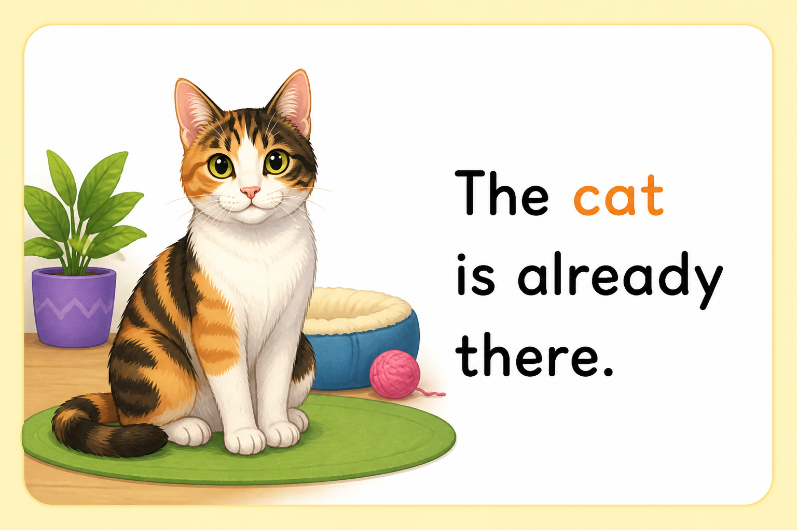

I clean my surroundings


Activity 4
Use ICT tools to watch videos or view pictures showing how to clean both the inside and outside of a house or classroom.
Explain the steps for cleaning a house or classroom.